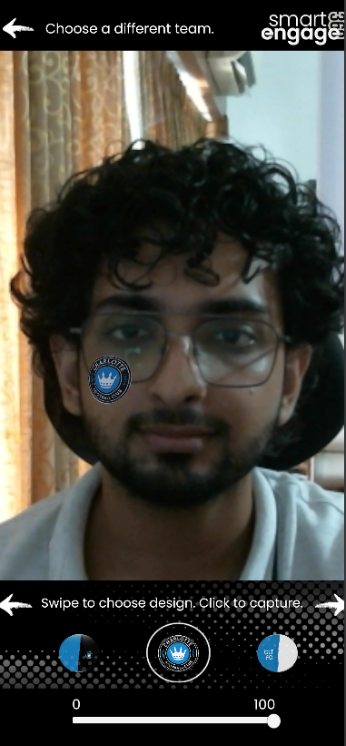
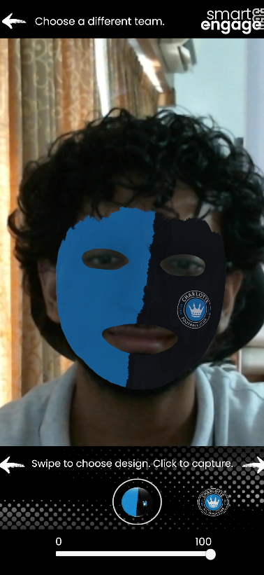
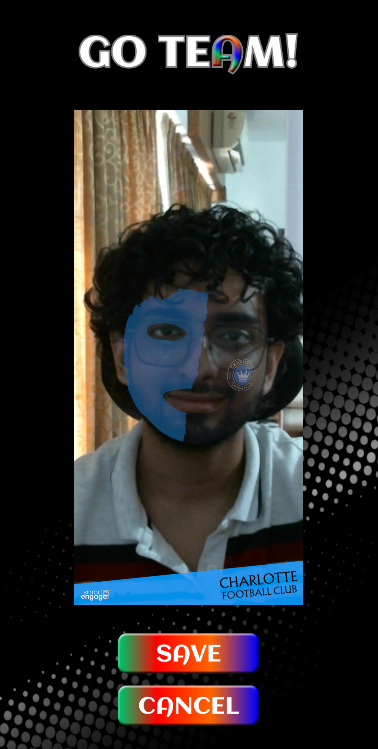

Team-Based Face Filters
Connected team selection to corresponding face-filter materials using WebAR Foundation and a team-to-material mapping.
An interactive WebAR photo experience where users select a team, explore its face filters, adjust filter transparency, and capture a team-branded photo. The experience supports local image saving and form-based photo submission through a REST API.
Connected team selection to corresponding face-filter materials using WebAR Foundation and a team-to-material mapping.
Built custom ScrollRect navigation with smooth snapping, active selection indicators, and a transparency slider that adjusts the selected material's alpha.
Integrated screenshot-based photo capture with AR camera framing, portrait output, team-logo overlays, preview, retry, and local save functionality.
Handled form validation and consent, then sent user details and the captured PNG as Base64 data in a JSON payload through UnityWebRequest.
Portrait (9:16) views of the face-filter and photo experience.



The biggest challenge was capturing a clean, high-resolution portrait image from the live webcam-based AR view using a screenshot tool, rather than taking a conventional camera photograph. The captured result had to maintain the correct aspect ratio and include the selected team's logo at the bottom.
I coordinated the webcam view's screen-space bounds, screenshot framing, and branded overlay visibility so the final image matched what users expected to see. The capture flow also had to support previewing, retrying, and saving without leaving the AR interface in an inconsistent state.